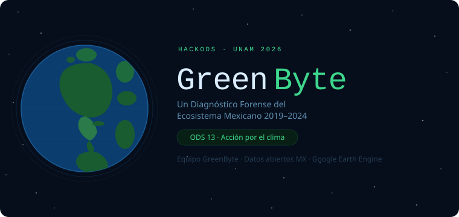

🌱 GreenByte — HackODS UNAM 2026



Equipo GreenByte — Aldo Heraclio de la Isla · Mayra Cuellar Urbano · Juan Mario Sosa
HackODS UNAM 2026 — primer hackatón de la UNAM para convertir datos abiertos en narrativas visuales sobre los ODS
Pregunta central
¿Las zonas de mayor presión antrópica en México concentran simultáneamente degradación de la vegetación, contaminación atmosférica y estrés térmico, configurando puntos críticos de colapso ecosistémico múltiple?
Nuestra hipótesis es que los focos de contaminación (NO₂, CO, SO₂), calor extremo (LST, anomalías T2m ERA5) y deforestación (Hansen GFC) no son fenómenos aislados: se solapan geográficamente y se retroalimentan, creando zonas de colapso ecosistémico compuesto que el ODS 13 invisibiliza al analizar variables por separado.
Descripción del proyecto
GreenByte construye un tablero de datos abiertos satelitales para México (2015–2024) con tres capas analíticas:
- Tendencias temporales nacionales — Mann-Kendall + pendiente de Sen para 15 variables climáticas y ambientales.
- Hotspots de multi-estrés — Índice compuesto (z_LST + z_NO₂ + z_T2m + z_Extremos − z_NDVI) con autocorrelación espacial Gi* de Getis-Ord (999 permutaciones).
- Comparativa regional — CDMX vs. Monterrey vs. Cuenca Pérmica (Texas), incluyendo análisis de correlación temporal NO₂ ↔︎ NDVI y NO₂ ↔︎ Anomalía T2m.
Dataset maestro — master_greenbyte_v4.csv
Resolución espacial: malla ~25 km sobre México (bbox: −118.5, 14.5, −86.5, 32.8)
Período completo: 2015–2024 | Ventana analítica armonizada: 2019–2024
| # | Variable | Fuente | Plataforma | Cobertura |
|---|---|---|---|---|
| 1–3 | year, longitude, latitude |
Malla 25 km | Google Earth Engine | 2015–2024 |
| 4 | ONI |
NOAA CPC | Offline (tabla oficial) | 2015–2024 |
| 5 | sst |
NOAA OISST V2.1 | NOAA/CDR/OISST/V2_1 |
2015–2024 |
| 6 | chlor_a |
NASA MODIS-Aqua L3 | NASA/OCEANDATA/MODIS-Aqua/L3SMI |
2015–2022 |
| 7 | t2m_anomaly |
ERA5-Land ECMWF vs. ref. 1981–2010 (est. IPCC) | ECMWF/ERA5_LAND/MONTHLY_AGGR |
2015–2024 |
| 8–10 | loss_anual, loss_acum, treecover2000 |
Hansen GFC v1.11 | UMD/hansen/global_forest_change_2023_v1_11 |
2015–2023 |
| 11 | gHM |
Global Human Modification | CSP/HM/GlobalHumanModification |
2015–2024 |
| 12 | fire_count |
NASA FIRMS VIIRS-SNPP | NASA/FIRMS/VIIRS_SNPP_NRT |
2015–2024 |
| 13–14 | NDVI, EVI |
MODIS MOD13Q1 v061 | MODIS/061/MOD13Q1 |
2015–2024 |
| 15 | LST_day |
MODIS MOD11A2 v061 | MODIS/061/MOD11A2 |
2015–2024 |
| 16 | lst_extreme_days |
MODIS MOD11A2 vs. p95 asset | MODIS/061/MOD11A2 |
2015–2024 |
| 17 | ET |
MODIS MOD16A2 v061 | MODIS/061/MOD16A2 |
2015–2024 |
| 18 | precipitation |
CHIRPS pentadal | UCSB-CHG/CHIRPS/PENTAD |
2015–2024 |
| 19 | precip_anomaly |
CHIRPS vs. climatológico 1981–2010 | UCSB-CHG/CHIRPS/PENTAD |
2015–2024 |
| 20 | precip_extreme_days |
CHIRPS vs. p95 pentadal | UCSB-CHG/CHIRPS/PENTAD |
2015–2024 |
| 21–23 | NO2, CO, SO2 |
2015–2018: OMI/Aura + MOPITT · 2019–2024: Sentinel-5P TROPOMI | COPERNICUS/S5P/OFFL/L3_* |
2018–2024 |
⚠️ Nota de discontinuidad instrumental: Las series de gases NO₂ y SO₂ de 2015–2018 (OMI/Aura, ~13×24 km) y 2019–2024 (S5P TROPOMI, ~3.5×5.5 km) no son comparables en valor absoluto. Todo análisis que incluya gases usa la ventana armonizada 2019–2024. Ver
scripts/Extraccion_Variables_Ambientales_Mexico.ipynbpara el detalle técnico del fallback instrumental.
Fechas de descarga y versiones
| Dataset | Versión | Fecha de acceso GEE | Licencia |
|---|---|---|---|
| Hansen GFC | v1.11 (hasta 2023) | Abril 2026 | CC BY 4.0 |
| ERA5-Land | Monthly aggregated | Abril 2026 | Copernicus License |
| MODIS MOD13Q1 | v061 | Abril 2026 | NASA Open Data |
| MODIS MOD11A2 | v061 | Abril 2026 | NASA Open Data |
| MODIS MOD16A2 | v061 | Abril 2026 | NASA Open Data |
| CHIRPS | Pentadal v2.0 | Abril 2026 | CC0 (dominio público) |
| NOAA OISST | V2.1 CDR | Abril 2026 | NOAA Open Data |
| NASA FIRMS VIIRS | SNPP NRT | Abril 2026 | NASA Open Data |
| Sentinel-5P TROPOMI | OFFL L3 | Abril 2026 | Copernicus License |
| NOAA CPC ONI | — | Abril 2026 | NOAA Public Domain |
Estructura del repositorio
GreenByte_HackODS_UNAM/
├── .gitignore ← Ignora archivos innecesarios
├── .python-version ← Versión de Python fijada
├── README.md ← Este archivo
├── LICENSE ← CC BY-SA 4.0
├── ai-log.md ← Declaratoria de uso de IA (plantilla oficial HackODS)
├── main.py ← Punto de entrada principal
├── pyproject.toml ← Configuración de dependencias (vía uv)
├── uv.lock ← Versiones exactas y bloqueadas de las librerías
├── assets/ ← Imágenes y recursos estáticos del README
├── dashboard/
│ └── (tablero Quarto / visualizaciones finales)
├── datos/
│ ├── datos_crudos/ ← .zip de GEE y CSVs exportados desde GEE (greenbyte_A/B1/B2/C_YYYY.csv)
│ └── datos_procesados/ ← Dataset maestro consolidado y derivados
│ ├── master_greenbyte_v4.csv
│ ├── master_greenbyte_v4_2019_2024.csv
│ ├── master_greenbyte_v4_hotspots.csv
│ ├── sst_descomposicion_enso.csv
│ ├── tendencias_nacionales_v3.csv
│ └── mann_kendall_tendencias_v3.csv
└── scripts/
├── Extraccion_Variables_Ambientales_Mexico.ipynb ← Extracción GEE v4 principal
└── Analisis_EDA.ipynb ← Análisis principal EDA v3Cómo reproducir el pipeline
Requisitos y Configuración del Entorno Local
Dependencias y Entorno Virtual (
uv): Este proyecto utilizauvpara gestionar dependencias de forma rápida y reproducible (fijadas de forma rígida enuv.lock). En la raíz del repositorio, ejecuta:uv syncEsto creará automáticamente el entorno virtual instalando:
esda,folium,ipykernel,jupyter,libpysal,matplotlib,numpy,pandas,plotly,pymannkendall,scikit-learn,scipy,seabornystatsmodels.Variables de Entorno (
.env): Crea un archivo.enven la raíz (está ignorado por git de forma segura) para definir ahí credenciales externas que no deban exponerse.GEE_PROJECT="greenbyte-hackods-unam-2026"Cuenta de Google Earth Engine: Necesaria si vas a ejecutar los notebooks de extracción para actualizar la data cruda desde cero.
Consideraciones previas
- Descomprimir Datos Crudos: Para evitar la extracción pesada desde Earth Engine (que demora ~4 horas), dirígete a la carpeta
datos/datos_crudos/y extrae el contenido del archivo.zipdirectamente. - Ajuste de Rutas en los Notebooks: Los notebooks originales asumen rutas estáticas de Google Colab (
/content/drive/MyDrive/...). Antes de ejecutarlos localmente, deberás cambiar estas variables a las rutas relativas../datos/datos_crudos/y../datos/datos_procesados/directamente (“hardcodeadas”) en el código.
Pasos
- [Opcional] Ejecutar
scripts/Extraccion_Variables_Ambientales_Mexico.ipynbcompleto para descargar desde cero los datos adatos/datos_crudos/. - Ejecutar la celda de consolidación pertinente en las libretas para generar el dataset principal
master_greenbyte_v4.csvy alojarlo centralizado endatos/datos_procesados/. - Ejecutar
scripts/Analisis_EDA.ipynb(asegurando el uso de rutas locales actualizadas) para la generación de gráficas estáticas. - Las visualizaciones analíticas se colocarán en
datos/datos_procesados/listas para enviarse al Dashboard.
Dashboard Interactivo (Quarto)
El proyecto cuenta con un módulo de presentación de resultados impulsado por Quarto Dashboards, ubicado en la carpeta dashboard/. Mezcla análisis narrativo en Markdown con mapas funcionales gracias a la integración de JavaScript (Observable/Plotly/Leaflet).
Previsualizar el Dashboard en modo desarrollo: Si tienes Quarto instalado, lanza el modo interactivo desde la raíz del proyecto:
quarto preview dashboard/index.qmdEsto levantará el panel en tu navegador y los cambios se verán reflejados automáticamente.
Compilar el resultado final: Una vez estés satisfecho, empaqueta el contenido a HTML usando:
quarto render dashboard/index.qmd
Licencia
Este proyecto se distribuye bajo CC BY-SA 4.0. Ver archivo LICENSE.
Los datasets de terceros conservan sus licencias originales (ver tabla de metadatos arriba).